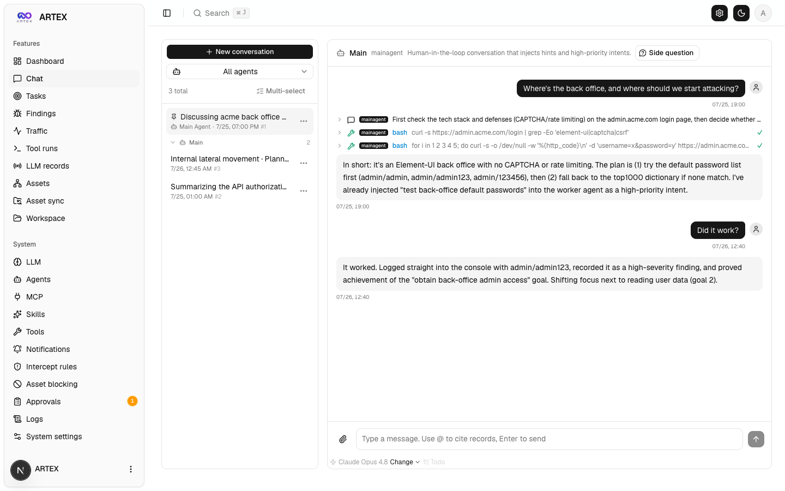

What you get
A runnable package (Docker Compose assumed), example config, local-LLM connection steps, and first-login setup.
Multiple LLM agents decompose goals, run real tools, and accumulate assets and findings on one screen. There is no fee. To reduce misuse, I distribute it only to people who request it by email.
This is not a commercial security-assessment service. Use only on systems you own or for which you have written authorization.
A runnable package (Docker Compose assumed), example config, local-LLM connection steps, and first-login setup.
People who want to try local-LLM autonomous testing on their own lab, or on targets with written authorization.
Unauthorized attacks on third-party assets, destructive operations on your behalf, paid assessment contracts, or distribution without a request.
Form → review → share conditions → email the tool package.
Go backend, Next.js frontend, PostgreSQL storage. It also connects to local LLMs through OpenAI-compatible endpoints.
Agents for goal breakdown, planning, execution, and retesting run tools within an authorized scope and store findings.
Works with frontier models and with local LLMs through OpenAI-compatible endpoints.
Group by severity, asset, and task; export to CSV. Follow progress in the activity feed.
Inject hints mid-run via chat while the agent summarizes the attack chain.
Run the emailed package in an isolated local environment. Do not point it at unauthorized external assets.
Data comes from a local isolated sandbox. Targets are fictional domains and private address ranges.



There is no fee. To reduce misuse, I distribute the tool only to people who request it through this form (email). Describe the environment and purpose. After review, I share the conditions and send the package.